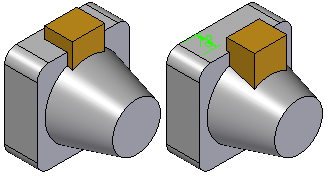
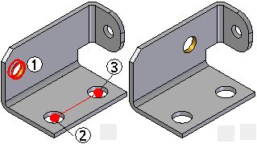
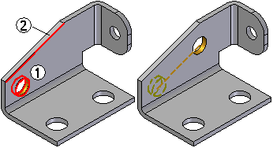
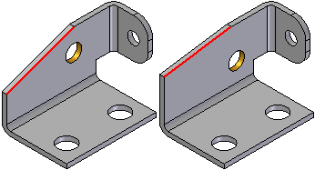
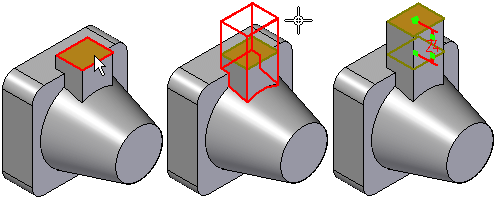
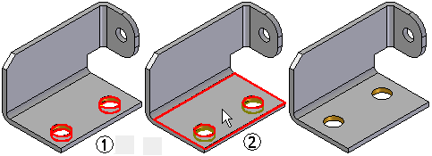
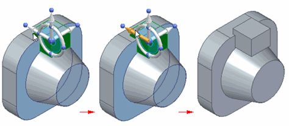
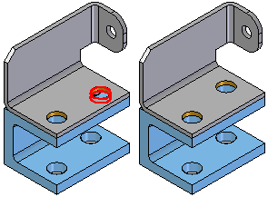
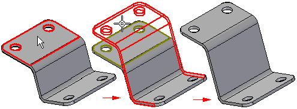

Move Faces command
Use the Move Faces command to move selected faces on a part.

There are four main steps to moving faces:
-
Select the faces
-
Specify the movement method
-
Define the start point
-
Define the destination point
Select the Faces
In the Select Faces step, use the options on the command bar to specify whether you want to move a single face, a feature, or an entire body. You can select the faces in the graphic window, or you can use PathFinder when moving a feature or a body.
Specify the Movement Method
In the Movement step, choose among the following options to specify how you want the selected faces to move:
-
Along a two point vector
-
Along an edge
-
Normal to a face
-
Within a plane
-
Synchronous move
When moving a face, the Design Intent panel displays a list of design intent relationships to assist in moving the selected face(s). By default, the relationships are unchecked for all movement methods except for Synchronous Move.
Define the Start and Destination Points
The start and destination points define the distance you want to move the faces. The start point must always be a key point, either on the current part or another part in the assembly.
Depending on the movement method you select, you can define the destination point using a free space point, a value you type on the command bar, a key point on the active part, or a key point on another part in the assembly.
When you use a key point to define the destination point, the destination point is associative to the key point you select. If the element you selected for the destination key point changes position later, the Move Faces feature will also update.
When you define the destination point using a free space point, a driving dimension is created, which you can edit later.
Movement Methods
Along 2 Point Vector
-
The Along 2 Point Vector option allows you to move one or more faces (1) along a vector you define using two points (2) (3). You define the two points for the movement vector during the Movement Step. You can select the points using key points on the active part or another part when working in the context of an assembly.

After defining the movement vector, you can define the start and destination points.
Along Edge
-
The Along Edge option allows you to move one or more faces (1) along a selected edge (2). This option is useful when an edge on the model is aligned with the direction you want to move the faces.

If the edge you selected changes orientation later, the Move Faces feature updates associatively.

Along Face Normal
-
The Along Face Normal option allows you to move one or more faces normal to a planar face or reference plane.
When you select a single planar face to move, the Normal to Face movement method is set by default, the selected planar face is used to define the normal direction, and the command automatically advances to the Move To Step option. This can be useful when you need to change the length of a feature normal to a planar face.

If you want to select a different movement method, you can click the Movement Step button on the command bar.
When you select a single non-planar face, more than one planar face, or a set of planar and non-planar faces, you must define the movement method you want.
In Plane
-
The In Plane option allows you to move one or more faces (1) to a new location with respect to a planar face (2). This can be useful when you want to relocate holes or other features on a sheet metal part. The Within a Plane option requires that you use a keypoint to define the destination point.

Synchronous Move
-
The Synchronous Move option displays the steering wheel so that you can move elements the way you do in synchronous.

After you start the movement only the active design rules remain displayed and you can change them as needed. After you complete the movement, the design rules used in the movement are available.
Editing the feature displays the dimension you can edit. Clicking the Movement Step displays the steering wheel in the same location and orientation used during placement. You can move the steering wheel and redefine the movement, if needed.
Moving Faces in the Context of an Assembly
When working in the context of an assembly, you can associatively select keypoints on other parts in the assembly to define the start and destination points. This can be useful when you need to reposition faces with respect to another part in the assembly.

Moving Faces on Sheet Metal Parts
When moving faces on sheet metal parts, you cannot change the stock thickness or bend radius of the part. Also, the adjacent faces which are not being moved compensate for the faces being moved.

The Move Faces command is not available when working with the flattened model. The changes you make to the sheet metal model are reflected in the flattened version of the part.
When working with a sheet metal model imported from another application, you should first use the Transform to Sheet Metal command to transform the model to a sheet metal part.